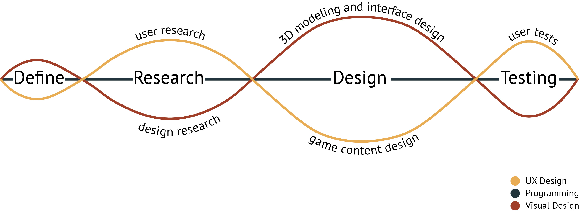
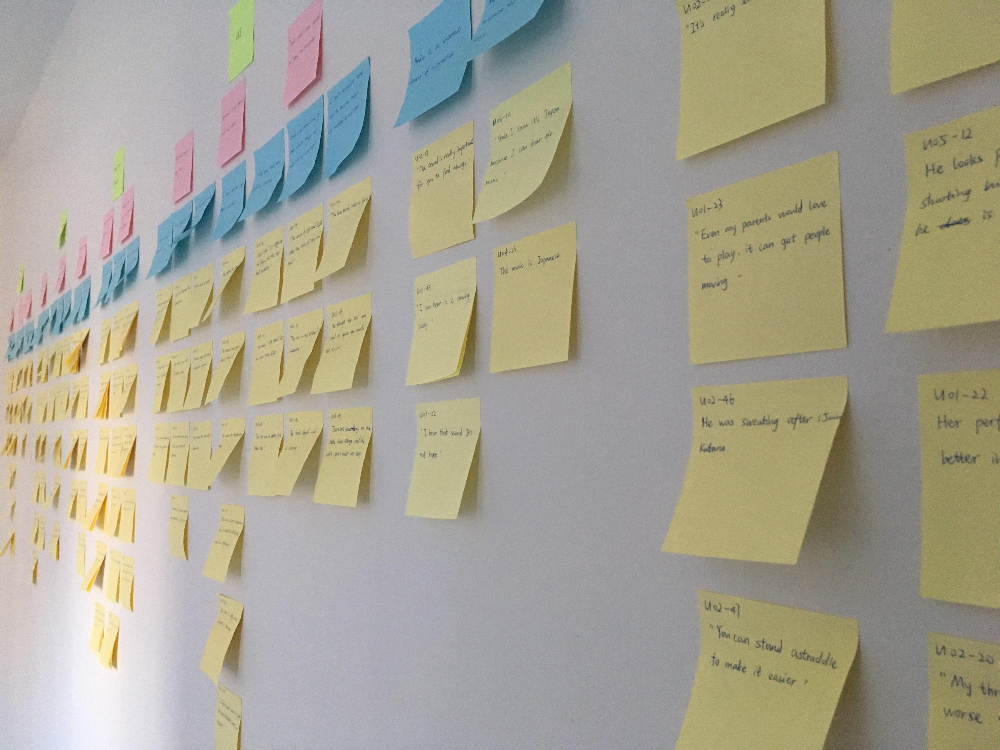
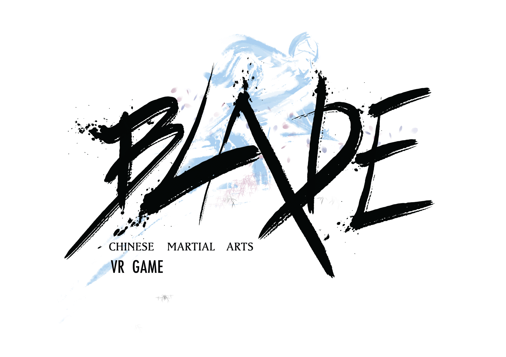
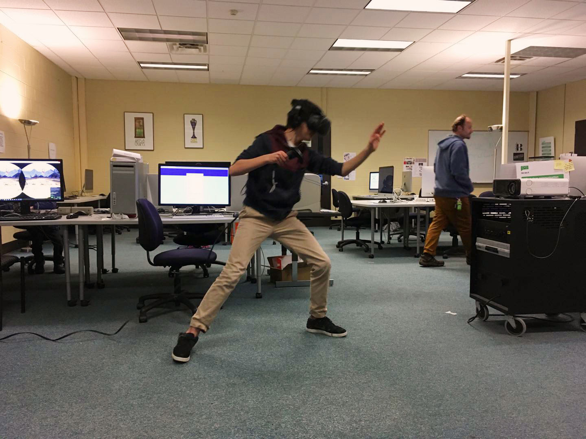
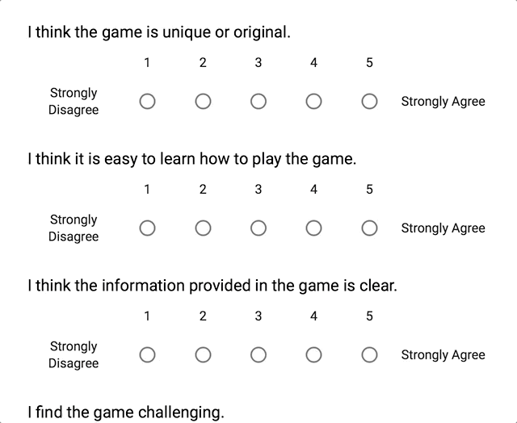

Blade
A VR game that teaches real movements in Chinese swordplay.
02/2017 - 05/2017
1 UX Designer (me)
2 Game Developers (Peng Guan,
Zizhun Guo)
2 Visual Designers (Jing Lyu,
Zheng Zhang)
Research
Content Design
Usability Testing
Affinity Diagram
User Flows
Storyboard
Challenge
VR games have been popular ever since the first consumer version of the VR headset became available for purchase in 2016.
Action games, among the many types of VR games, enjoyed special popularity for the highly immersive and interactive experience.
However, despite the large amount of successful action VR games, a VR game that delivers real Chinese traditional culture was not available.
Therefore, as a group of Chinese students, we set our goal to design a VR game that offers great game experience whilst communicating the amazing Chinese traditional culture.
Approach
Because of the nature of the project itself, we had to find a balance between artistic creating and user-based designing. To achieve that, we adopted a method that allow us to communicate ideas to the entire group so the group would make the final design decision. As we were expected to present a demo version within a short timeframe, each role worked on their own part that is essential to the product but not influential to the design decisions.
User Research Insights
My first mission was to gather user problems and user expectations for our product. To discover problems people might meet during their interactions with a Chinese culture based action VR game, I searched for similar products on Steam and finally decided to use Sky Sanctuary, a VR game based on Japanese warrior culture, to conduct contextual inquiry. The participants each explored the game for about 40 minutes and I observed their behaviors on the side. They were asked to think aloud when playing so that I could note down their thoughts and comments.
These are the six major findings and insights that shaped our demo game:
Challenge and Fulfillment
A proper difficulty can keep users attached. Users would feel excited when facing challenges and completing tasks could bring them a sense of achievement.
Moving Restrictions
Users' movements are affected by the device. Their controllers and headset need to stay in a given space, and their hands and head are not able to move freely due to the existence of the cable.
Significance of Tutorial
The tutorial play an important role in gaming experience. A good tutorial can not only teach users how to play, what's more important is that it bridges the VR system and the game content.
Easy-to-read Interface
The interface elements should be legible and easy to recognize. Important visual information should be salient. Besides, users prefer motion than text when it comes to obtaining information in VR games. Too much text could be annoying and users tend to skip it even though they know it might be helpful.
The Secret of Sounds
User experience is greatly affected by sounds. They can increase feelings of engagement and immersion, as well as provide necessary information for players.
A Good Game is Educational
Users love it when they can learn something from games.
Vision
Our vision for the game was to bring unprecedented gaming experience that benefits users both educationally and emotionally. We would love to see our users feeling great about learning Chinese martial arts movements from our game, and we hoped that this game promotes real Chinese culture.
Challenge: What to teach?
The first challenge was to decide the game content. The group sat down and discussed feasibility of communicating each form of Chinese martial arts in VR environment. We listed the limitations and user interests to help us make a wise decision:
Limitations
- Space Limitation
- Range of motion
- Complexity of Actions
- Capability of controllers
User Interests
- Something special
- Unique elements of Chinese culture
- Proper difficulty
- A deep sense of involvement
There are many forms of martial arts in China, from the most famous Kung fu, to the ones that utilizes weapons such as swords, blades, and bows.
Considering the characteristics of each form, under the given constraints, we believed that we can achieve our goals best by delivering Chinese sword (Jian) movements.
Thus I started collecting information about Jian movements. My goal was to find three basic Jian movements that are practical for our project.
My initial picks were three movements from Wu Dang Jian, which is famous for its beautiful sword movements and lasting popularity.
However, after a quick meeting with the game developers, I realized the movements were too complicated for them to work on.
So I did another round of research and finally picked three feasible movements from Tai Chi Jian:
Cut Left, Cut Right, and Chop. Our users would learn these basic movements by playing our game.
So, how do you teach it?
Now that we've got the material to teach, it's time to design the framework of the game.
Originally, the team agreed on setting up two modes in our game: a Training mode, in which the users
can learn and practice sword movements; and a Classic mode, in which users would beat the enemies using movements they learned from the Training mode to complete tasks and win rewards.
So I designed a flowchart that reflects the user needs as well as our intentions, and this chart helped clarifying sub-design tasks for each team member.
One of the most essential part in our game was to deliver tutorials to our users. By doing research and brainstorming, I came up with several possible ways to deliver the Tai Chi Jian movements. I took the solutions to our group meeting and after discussing the design and tech feasibility of each method, we decided to use UI elements to guide users to move their Jian accordingly.
To better convey the whole idea, I made sketches for important screens of the game. Based on Vincent McCurley's article Storyboarding in Virtual Reality, the forward field of view in a VR display is around 94°, and plus comfortable head turn, the field of view can reach up to 154°. Important content should be placed at a viewing distance of 0.5m to 10m for a better display. Therefore, I set the dark grey area as my sketching area.
Our visual designers and game developers took it over from here. However, learning VR programming from zero was way more difficult than we expected. So we had to take part of the original design out and make some modifications in order to complete the project on time.
The Demo
Evaluation
We had our demo tested on 10th Imagine RIT. Each user played our game for a round and then filled in a questionnaire asking about their gaming experience. In total we got 70 effective responses.
The questionnaire was designed to evaluate the demo from the six aspects derived from the affinity diagram. It includes 8 items selected from the Game User Experience Satisfaction Scale (GUESS) and one open-ended question asking for comments and suggestions about the game.
By analyzing both observational data and questionnaire data, I was able to evaluate our demo and detect aspects that need improvements:
The game needs to be more challenging
The score on questionnaire item "I find the game challenging" was significantly lower than overall score, which means the low difficulty level is holding back the overall gaming experience. We also received comments from users suggesting that --
U62: “Make it more challenging, add more movements like defense, more attack ways.”
U65: “Can the enemies come from multiple directions? That would make the game more challenging.”
A tutorial is needed
Because the training mode was cut out, there lacked tutorials that teach users the right movements. This led to participant confusion when starting a new game. They had to figure out how to play it by trial and error. For example, some participants were confused about the right direction to swing the sword, and some participants didn’t realize they were going in an opposite direction. This problem should be solved as a high priority in future modifications.
Reflections
Saying is as important as doing
I used to believe doing is the effective way when it comes to problem solving. I tended to do more than I speak.
But this project has taught me that speaking is an essential part of team working. You need to convince them about your design, to point out illogicalities in some ideas, to keep everyone updated about your progress, and most importantly, to let others understand that UX design is useful.
I was in a position where no one other than me knows what UX design is. Even the UI designers thought I do research and that's all. I spent a lot of time showing and explaining my work to my teammates. This might not be necessary if you are working with experienced designers or developers, but the skills I have learned from this process will definitely help me in the future.
Ask "What can I do?" rather than "What should I do?"
I used to think if I could do "my job" perfectly, then I would be a great member for the team. But I was wrong.
It turned out that if every member just finished what we were required to do, then it is very likely that we couldn't have reached our goal in the end. This is because you can never predict what would happen in a totally new project, let alone the team members are people you've never worked with. There were times problems occurred but no one had been assigned to take the responsibility. A great team member would think "What can I do now?" instead of "This is not my business, let me just sit back." And even if it's not your field of expertise, a willing heart can help you grow faster in many ways.
This was our first joint project and none of us had experience working with other job roles. We didn't even know how to make a VR game at the beginning of the project but in the end, we made it. I would not say the deliverable is satisfying from my perspective, but we all have learned so much more than we could have imagined.
I am so grateful 💖.
This is the last case study.
For non-design works, check out Explore